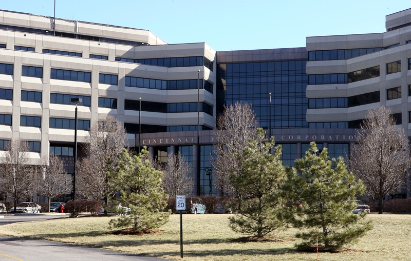
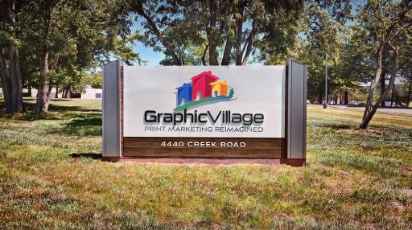
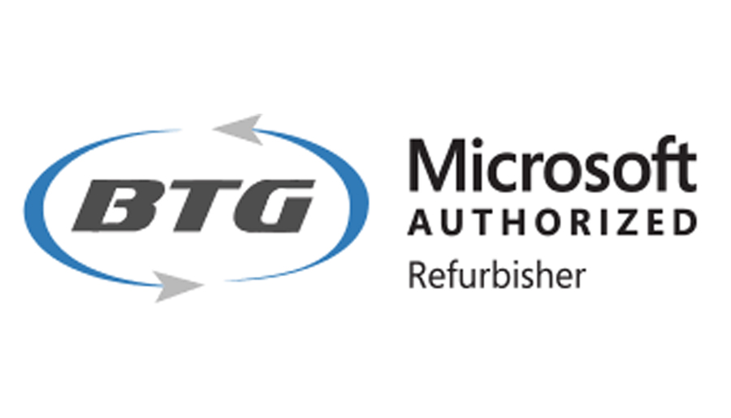
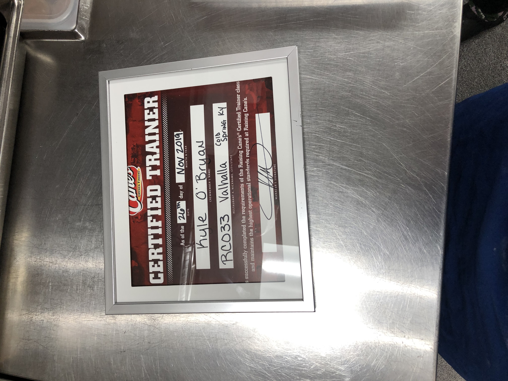

My Education

My previous education was Bishop Brossart high school where I graduated with a 3.0 GPA and received my Highschool Diploma. For extra circulars at my high school, I played sports and was a part of the beta club where we would do community service. I currently attend Northern Kentucky University where I am working towards a Bachelors’s Degree In science In Cyber Security. I currently have a 3.0 there as well. For extra circulars at NKU, I am involved with the cyber defense club and I am currently on the NKU esports A team for League of Legends. My planned graduation date is 2024.

My Work Expirence
My current place of work is at Cincinnati Insurance Group. Their headquarters are located in Fairfield Ohio, yet they have a contracted building on campus that they allow interns to use. My current title there is IT Tester, which in short means they hired me to break the system. My day-to-day is running test cases and testing different software to insure that they are running properly. If not I have to document in detail what the problem is. I have been working with Cincinnati Insurance Group since August 2021. I also am currently the youngest intern they have hired to date.

Graphic Village
My last place of work was Graphic Village in Blue Ash Ohio. At Graphic Village my title was Computer Technical Support Intern. At Graphic Village my job was to be the very first point of contact for anyone that was having issues related to computers, phones, printers, or any kind of other technical error. I was then tasked with solving that problem promptly then documenting what the problem was and how it was solved. I was also the youngest intern they have hired to date. I worked there as a summer internship from May to August of 2021.

Blair Tecnology Group
My very first job in the computer field was at Blair Technology Group in Covington Kentucky. My title there was Computer Technician. My job was to build and repair various makes and models of PCs. I was also tasked with a certain quota for each work shift which I always hit. My other day-to-day activities included testing certain PC hardware to make sure it was running right and as well as setting the PCs BIOS and installing Windows on them. I worked there from November 2020 to May 2021.

Raising Canes
Last but not least my very first job in my entire life was at Raising Canes in Cold Spring Kentucky. The building had just opened in 2018 and I was one of the very first crew members to work there. I became the youngest ever in Raising Canes history to achieve my Crew Traner Certification which is the highest level next to the manager. For two years I mentored new employees, ensured quality food was being served as well as quality customer service was happening. To this day I still hold the record for fastest drive-thru times in a day at 1 minute and 16 seconds per car. I worked there from November 2018 to November 2020.